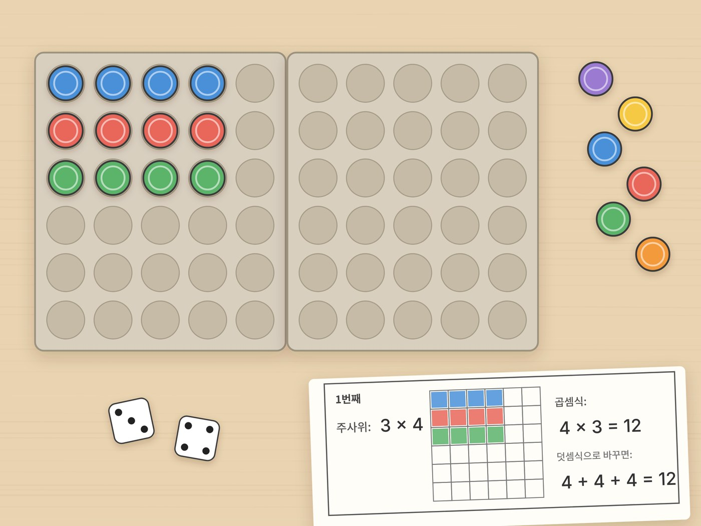

전체 단원 › 실험·활동 › 2학년 2학기 수학
달걀판 곱셈 배열

달걀판 칸에 병뚜껑을 줄 맞춰 놓으면 곱셈이 눈에 보여요. 주사위 두 개로 하는 곱셈 놀이예요.
20분 · 난이도 ★☆☆ 쉬움
준비물
- 종이 달걀판 2개 — 30구 달걀판 2개를 나란히 붙이면 6×6까지 놓을 수 있어요
- 병뚜껑 36개 — 페트병 뚜껑. 단추나 콩으로 바꿔도 돼요.
- 주사위 2개 — 보드게임 주사위. 없으면 1~6 숫자 카드를 만들어요.
- 곱셈 기록판 도안 — 아래에서 내려받아 인쇄해요
하는 방법
- 주사위 굴리기
주사위 두 개를 굴려 나온 수를 기록판에 적어요. 예를 들어 3과 4가 나왔어요. - 배열 만들기
첫째 수만큼 줄을 만들고, 한 줄에 둘째 수만큼 병뚜껑을 놓아요. 4개씩 3줄을 놓으면 돼요. - 뛰어 세기
하나씩 세지 말고 한 줄씩 "4, 8, 12" 하고 뛰어 세요. 4씩 3줄이니까 곱셈식으로 4 × 3 = 12예요. - 달걀판 돌려 보기
달걀판을 옆으로 돌리면 3개씩 4줄이 돼요. 3 × 4도 12인지 세어 봐요. - 기록판에 색칠하기
기록판 칸에 배열만큼 색칠하고, 곱셈식(4 × 3 = 12)과 덧셈식(4 + 4 + 4 = 12)을 함께 써요. 여섯 번 반복해요.
생각해 봐요
- 4 × 3과 3 × 4는 왜 답이 같을까요?
- 병뚜껑 12개로 만들 수 있는 직사각형 배열은 몇 가지일까요?
- 병뚜껑 7개로는 직사각형을 몇 가지 만들 수 있나요?
개념 정리
곱셈은 같은 수를 여러 번 더하는 것을 빠르게 하는 방법이에요. 3줄에 4개씩이면 4씩 3묶음, 곧 4 + 4 + 4이고, 줄여서 4 × 3이라고 써요. 달걀판을 돌려도 병뚜껑 수는 그대로라서 3 × 4도 12예요.
학교 교육과정 연결 (기초 다지기)
- [2수01-10] 곱셈이 이루어지는 실생활 상황과 연결하여 곱셈의 의미를 이해한다.